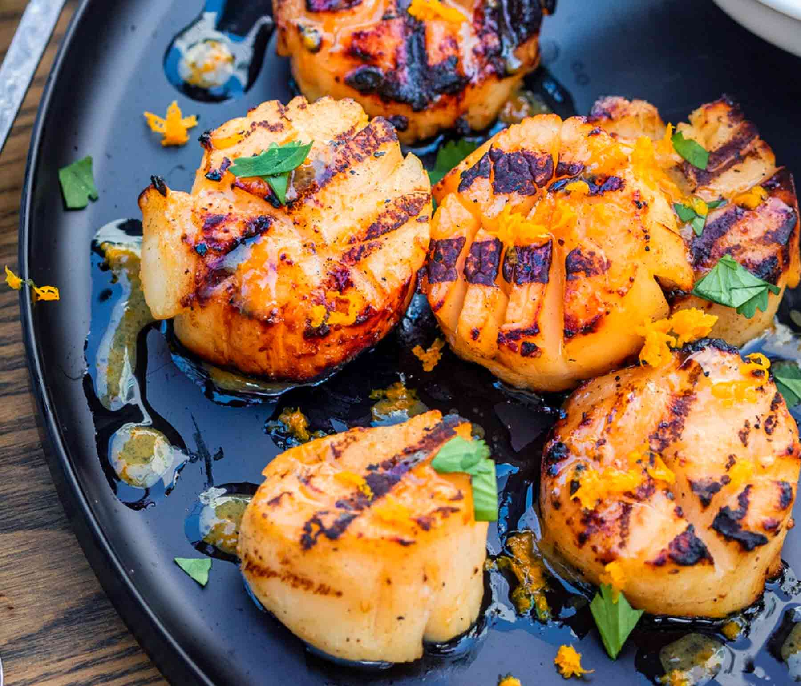

Garlic-Lemon Scallops

Description
This recipe is a simple, yet delicious meal for just one person, or even a good date night.
This seafood dish easily melts in your mouth, without having you chew more than 5 bites. This, paired with a good side dish, would make for a delightful night!
Ingredients
- 3/4 cup butter
- 3 tablespoons minced garlic
- 2 lbs large sea scallops
- 2 tablespoons fresh lemon juice
- 1 teaspoon salt
- 1/8 teaspoon pepper
Steps
- Step 1: Gather all ingredients
- Step 2: Melt butter in a large skillet over medium heat. Stir in garlic and cook for a few seconds until fragrant.
- Step 3: Arrange scallops in a single layer in the skillet;
cook until golden brown on one side, about 2 minutes. Turn scallopsover using tongs and continue cooking
until firm and opaque, about 2 minutes more.
- Step 4: Transfer scallops to a platter, reserving butter in the skillet.
- Step 5: Whisk lemon juice, salt, and pepper into butter;
pour sauce over scallops to serve.
- Step 6: Enjoy!
Home